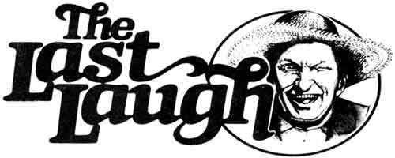

Well sir, I don't know if’n it's true-as some folks claim-that fishin' is somethin' that jist goes on in yer head, but I am pretty danged sure that the loafers around the Plumtree Crossin' Gen'ral Store could name one partic'lar piscatorial expedition that woulda been a dern sight more pleasant if'n it hadda never got beyond the imaginin' stage.
I s'pose you could say that the whole shebang was Purvis Jacobs' fault. You see, Purvis, he likes angiln' near as much as he enjoys that corn-squeezed elixir that he cooks up in Turkey Thief Holler . . . an' he seems to find the sport specially amusin' when somebody else is sufferin' through it with him.
Which is likely why he announced-some weeks ago-that he was fixin' to hold a fishin' derby on the openin' day of trout season.
"Are you daft, Jacobs?" snorted Old Man Bartlett. "The season starts tomorrow an' about the only streams that ain't still iced over are dang near straight up and down."
"Well, Ott, I kinda thought you'd feel that way," replied Purvis, "which is why I aim to award two jugs of my special aged squeezin's-they's four weeks old if'n they's a day-to whoever pulls in the biggest fish on that occasion.''
Natcherly, this news sparked the fellers' interest, an' it also set 'em to recallln' their past anglin' exploits. Ott got the ball rollin' with a tale about a monster bass he'd once drug outa Big Mud Lake.
"Now, I ain't sayin' that fish were big, mind you," he concluded, "but I did note that the water level dropped a good three feet when I pulled him out, an' left a few vacation people's boats high and dry. . . ."
"One thing's fer sure about that lake," Lafe tossed back, "they's been a heap more fish pulled outa it than was ever in there."
This sorta tomfoolery went on till about suppertime, when the fellers headed home to dig their tackle outa garage corners an' the like, an' douse its movin' parts with 3-in-l oil.
It havin' been agreed that ev'rybody oughta keep an eye on each other-considerin' the rich prize that was at stake-the boys all headed fer the Lick Skillet River together the followin' mornin' . . . that bein' the only trout water nearabouts mean enough to be flowin' freely. The day dawned jist shy of unpleasant-with one of them gray drizzles that sets yer skin to tremblin' like a fly-pestered horse at ev'ry drop-but Purvis had supplied each vehicle with a jug of spring tonic, and the gen'ral mood was near boist'rous when we reached the river.
Ol' Ott was the first to git a line in the water, although Skeeter claimed that he woulda been first if'n Ott weren't still usin' last year's worm. Young Billy Parsons couldn't git enny aim at all outa his fancy fly rod in the wind that had set to blowin' . . . an' he snagged Newt Blanchard's hat three times afore he had to set off down the bank with that old gentleman in hot pursuit.
The day proceeded to go downhill from there. A new determination took hold of the mornin's drizzle, an" it incorporated some sizable drops of sleet into its ranks. There weren't much humor bein' tossed about, neither, but them boys are mule-stubborn, an' they stayed at it.
Ott had brung the bottle from his car-appropriatin' it by rights of seniority-so it weren't long afore he was stretched out on the bank and pretty much lettin' his pole fend fer itself.
Skeeter Ridges weren't feelin' no pain, neither. He'd got a driftwood fire goin' an' then backed right up to it. starin' at his line like it was a direct telephone to the Almighty that was fixin' to ring.
About the only feller who seemed to be enjoyin' the debacle was Purvis hisself. He was jist castin' away and happy as a pig knee-deep in the barnyard . . . when all of a sudden his rod bent double.
"Got one!" Purvis yelled. An' a number of fellers-those who was still up and about-ambled over to watch. It seemed that Mister Jacobs had hooked onto somethin' big. He was doin' ev'rything but the Charleston to stay upright on the slickery river bottom . . . an' his line jist kept goin' out and out.
"Snappy turtle, I reckon," offered Lafe.
"Snappy turtle, yer mule!" answered Purvis, thumbin' his reel. There was a minor explosion about 50 yards downstream jist then, and a brown trout big enough to swaller a duck came out of the water, clackin' his gills like a pair of them Mexican casty-nets.
In the excitement nobody paid enny attention to Skeeter an' Ott, who was both pretty much dead to the world, ennyway. Somewhere along then, though, Skeet musta edged too close to his fire . . . 'cause the next thing we knew the poor feller was hollerin' like a barn at feedin' time, with flames climbin' up the back of his jacket.
Skeeter jumped up, waved his arms, an' took a flyin' leap to about midstream . . . though he weren't able to swim a lick.
They was enough air in what remained of his coat to buoy him up, howev'r, an' he went bobbin' along with the current. Needless to say, Skeet grabbed aholt of the first thing he could . . . which jist happened to be the last few feet of Ott's fishin' line.
Now-gone as Ott was-when his pole started skitterin' along the bank he was up and on it like a shot. I s'pose he'd been dreamin' about winnin' them jugs, 'cause he hauled back on that rod hard enough to hook a houseboat.
What he did snag, howev'r, was the seat of Skeeter's britches. The injured party let out a scream, and Ott-who weren't quite sure what was goin' on as yet-set to reelin' with a vengeance.
I don't know what all O1' Man Bartlett was usin' fer line, but it was ample . . . an' it slowed Skeeter down and started him swingin' toward shore.
Now, Mister Ridges kin be a mite orn'ry most enny time he gits to drinkin', an' at this point he had a snootful of 'shine, a river to his armpits, an' a number-six longshank embedded in his backside. He was mad enough to chew up nails and spit out needles.
Meanwhile, Purvis was workin' on that outsized fish . . . which weren't half tuckered out yet. In fact, when it saw Skeeter sloggin' his way ashore, the trout musta thought its ownership of that partic'lar piece of water was bein' challenged-or maybe it was jist too danged scared to think- 'cause it made a beeline fer the poor wet soul and jumped right in front of his face.
As I said before, Skeet was plumb blind, sputterin' mad. He muttered an oath when that fish took to the sky . . . an' unloosed a haymaker that caught the trout square in its solar plexus.
Big as it was, that fish sailed a good 20 feet through the air-snappin' Purvis' line in the process-an' went floatin' belly-up down the river.
As you kin imagine, they was some tense moments ashore . . . what with Skeeter, Ott, an' Purvis all feelin' somewhat low and mean. But ev'rybody else was laughin' fit to bust, an' that seemed to de-fuse the situation. We got the fire goin' good an' all hunkered down in front of it to git warm.
The contest was declared a three-way draw . . . seein' as Purvis had hooked the fish, an' Skeeter had finished it off while he -of course-was on the end of Ott's line. It weren't long afore ev'rybody was sharin' in the prizes, ennyway.
We all agreed that it'd been a mizzerble experience . . . an' the more we got to complainin' about jist how dadburned bad it had been, the more we got to enjoyin' talkin' about it.
I guess that's jist the way it is with fishin'.
"Imagination has this peculiarity, that it produces the greatest things with as little time and trouble as little things."
Pascal
"Doubt is not a pleasant condition, but certainty is an absurd one."
Voltaire
"Only the wise man is content with what is his. "
Seneca
|
 |
|
|